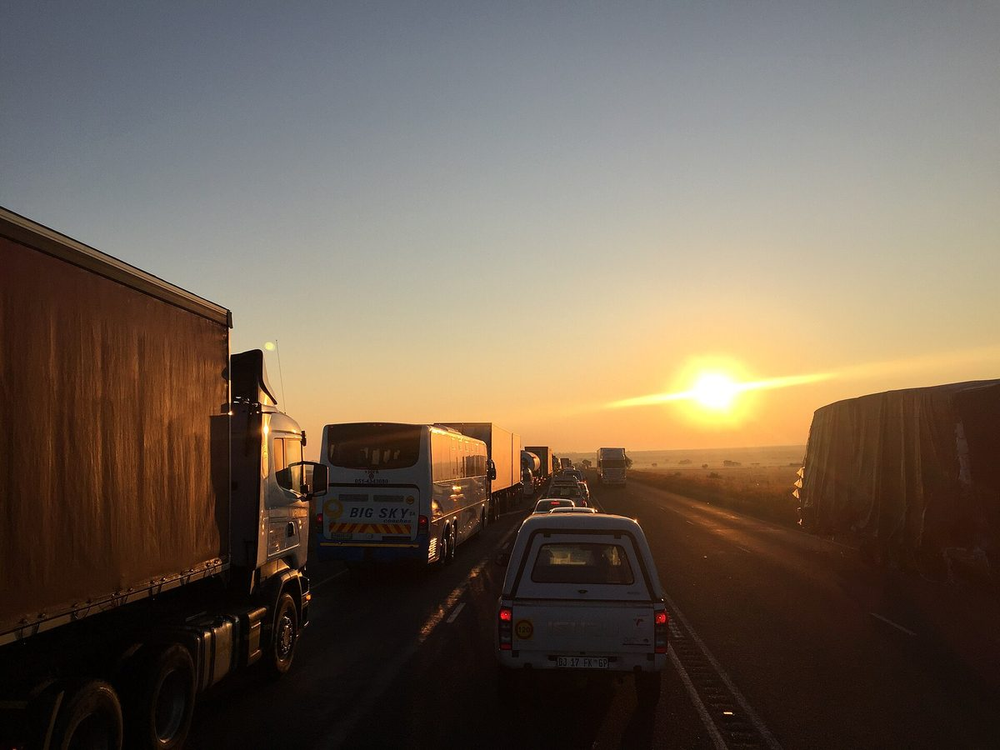

남아공 광산 피해 주민운동 MACUA, 21억 랜드 손반어르 태양광 사례 들어 재생에너지 사업의 지역사회 소유·결정권 법제화 요구

보고서 「녹색 전력, 오래된 불평등」, 주민 의견 없이 계약 맺고 소상공인 혜택도 없었다고 주장…개발사는 주민 805명 고용·교육 내세우며 공공 입찰 밖 민간 계약이라 공동체 이익 요건 대상 아니라고 설명
남아프리카공화국 광산 피해 지역 주민운동 MACUA(Mining Affected Communities United in Action)가 재생에너지 사업이 들어선 지역의 주민이 소유와 의사결정, 경제적 이익을 법으로 보장받아야 한다는 보고서 「녹색 전력, 오래된 불평등(Green Power, Old Inequality)」을 냈다. 청년·여성 조직 YAMUA·WAMUA와 함께 만든 보고서는 프리스테이트 주의 옛 금광 마을 토이니선(Theunissen) 근처에서 2024년 11월 시작된 사업비 21억 랜드 규모의 손반어르(Sonvanger) 태양광 발전소를 사례로 들었는데, 이 발전소는 남아공 개발사 펠레 그린 에너지(Pele Green Energy)가 개발·소유·운영하며 광산회사 글렌코어 사업장에 20년 전력구매계약으로 전기를 공급한다. 보고서는 "전기의 공급원이 바뀐다고 그 자체로 권력의 분배가 바뀌지는 않는다"면서, 상업 계약이 주민 의견을 제대로 듣지 않고 맺어졌고 혜택을 받기로 한 지역 소상공인이 받지 못했다고 주장하고 단순한 협의를 넘어 자산 통제와 의사결정, 집행할 수 있는 이익을 법 구조로 확정하라고 요구했다. 주민들은 11월 11일 이 보고서를 발전소 측과 글렌코어, 은행에 전달할 예정이며, MACUA 측은 소송도 검토하고 있고 정부 입찰 프로그램 REIPPPP에는 지역·공동체 소유 요건이 있지만 신규 재생에너지 사업의 60% 넘게가 그 틀 밖의 민간 계약으로 추진된다고 주장했다. 펠레 그린 에너지 측은 손반어르가 REIPPPP가 아니라 민간 구매자에게 전기를 파는 사업이어서 공동체 이익 요건의 대상이 아니라면서도, 처음 계획한 300명보다 많은 토이니선 주민 805명을 일반 노동자로 고용하고 보안·운송·숙박을 지역 업체에 맡겼으며 기술 교육과 장학금을 제공했다고 밝혔고, 공사가 끝나 가면서 일자리가 줄고 있다는 점은 인정했다. 에너지전력부 대변인은 공공 입찰에서 생기는 의무와 민간 쌍방 계약은 구분해야 한다고 했고, 대통령 기후위원회(PCC) 측은 투자만으로 더 공평한 결과가 보장되지는 않는다며 지역사회가 시설을 받아들이는 데 그치지 않고 이익을 나눠야 한다는 입장을 밝혔다.
시민에너지 관점
공공 입찰에만 공동체 소유 요건을 두고 신규 사업 상당수가 민간 계약으로 그 틀을 비켜 간다면, MACUA의 주장대로 그 비율이 60%를 넘는지와 상관없이 좋은 제도도 많은 사업에는 닿지 않는다. 주민 805명을 고용했다는 반론이 있지만, 회사 스스로 인정했듯 일자리는 공사가 끝나면 줄고 20년 계약 기간 내내 남는 것은 발전소의 소유와 수익이다. 일자리가 몇 년의 소득이라면 지분과 결정권은 20년의 자산이며, 주민이 그 자리에 들어가야 재생에너지가 옛 광산 시대의 불평등을 되풀이하지 않는다. 국내에서도 주민 참여와 이익 공유 기준을 공공 입찰이나 정부 지원 사업에만 묶어 두지 말고, 기업이 직접 전기를 사는 민간 계약 사업까지 같은 기준이 적용되도록 넓혀야 한다.
출처: Polity.org.za 2026-10-28 Refilwe Mochoari 원문 보기
南アフリカの鉱山被害住民運動MACUA、21億ランドのソンファンガー太陽光を例に再エネ事業での地域社会の所有・決定権の法制化を要求
報告書『グリーン電力、古い不平等』、住民の意見を聞かずに契約が結ばれ零細事業者への恩恵もなかったと主張…開発会社は住民805人の雇用や研修を挙げ、公共入札外の民間契約のため地域便益要件の対象外と説明
南アフリカの鉱山被害地域の住民運動MACUA（Mining Affected Communities United in Action）が、再生可能エネルギー事業が立地する地域の住民は所有、意思決定、経済的利益を法的に保障されるべきだとする報告書『グリーン電力、古い不平等（Green Power, Old Inequality）』をまとめた。若者・女性の組織YAMUA・WAMUAと共同で作成した報告書は、フリーステイト州の旧金鉱の町トイニッセン（Theunissen）近郊で2024年11月に始まった事業費21億ランドのソンファンガー（Sonvanger）太陽光発電所を事例に取り上げた。この発電所は南アフリカの開発会社ペレ・グリーン・エナジー（Pele Green Energy）が開発・所有・運営し、鉱山会社グレンコアの事業所に20年の電力購入契約で電気を供給している。報告書は「電気の供給源が変わっても、それだけで力の配分が変わるわけではない」とし、商業契約が住民の意見を十分に聞かずに結ばれ、恩恵を受けるはずだった地元の零細事業者が受けられなかったと主張したうえで、単なる協議を超え、資産の管理、意思決定、執行可能な利益を法的な仕組みで確定するよう求めた。住民は11月11日にこの報告書を発電所側、グレンコア、銀行に手渡す予定で、MACUA側は訴訟も検討しており、政府の入札制度REIPPPPには地域・コミュニティー所有の要件があるものの、新規再エネ事業の60％超がその枠外の民間契約で進められていると主張した。ペレ・グリーン・エナジー側は、ソンファンガーはREIPPPPではなく民間の買い手に電気を売る事業のため地域便益要件の対象ではないとしながらも、当初計画の300人を上回るトイニッセン住民805人を一般労働者として雇用し、警備・輸送・宿泊を地元業者に任せ、技術研修や奨学金を提供したと説明し、工事の終盤に入って雇用が減っていることは認めた。エネルギー電力省の報道官は公共入札から生じる義務と民間の相対契約は区別すべきだとし、大統領気候委員会（PCC）側は投資だけでより公平な結果が保証されるわけではなく、地域社会は施設を受け入れるだけでなく利益を分かち合うべきだとの立場を示した。
市民エネルギーの視点
公共入札にだけ地域所有の要件を設け、新規事業の多くが民間契約でその枠を避けて通るのであれば、MACUAの主張どおりその割合が60％を超えるかどうかにかかわらず、良い制度も多くの事業には届かない。住民805人を雇用したという反論はあるが、会社自身が認めたように雇用は工事が終われば減り、20年の契約期間を通じて残るのは発電所の所有と収益だ。雇用が数年の所得だとすれば、持分と決定権は20年の資産であり、住民がその席に加わってこそ再生可能エネルギーが鉱山時代の不平等を繰り返さずに済む。韓国でも住民参加と利益共有の基準を公共入札や政府支援事業だけにとどめず、企業が電気を直接買う民間契約の事業にまで同じ基準が適用されるよう広げるべきだ。
出典: Polity.org.za 2026-10-28 レフィルウェ・モチョアリ（Refilwe Mochoari） 原文を読む
南非矿区受害居民运动MACUA以21亿兰特的Sonvanger光伏项目为例，要求以法律保障可再生能源项目中社区的所有权和决策权
报告《绿色电力，旧有不平等》称合同未听取居民意见、本地小企业也未获益…开发商则列举雇用805名居民及培训，并解释称项目属公共招标以外的私人合同，不受社区受益要求约束
南非矿区受害社区居民运动MACUA（Mining Affected Communities United in Action）发布报告《绿色电力，旧有不平等》（Green Power, Old Inequality），主张可再生能源项目所在地的居民应在法律上获得所有权、决策权和经济利益的保障。这份与青年组织YAMUA、妇女组织WAMUA共同完成的报告，以自由州旧金矿小镇特尼森（Theunissen）附近于2024年11月启动、总投资21亿兰特的Sonvanger光伏电站为案例。该电站由南非开发商Pele Green Energy开发、拥有和运营，依据20年购电协议向矿业公司嘉能可的生产设施供电。报告指出，“电力来源的改变本身并不等于权力分配的改变”，并称商业合同是在未充分听取居民意见的情况下签订的，原本应受益的本地小企业也未能受益，要求超越单纯的协商，以法律架构确立社区对资产的控制、决策参与和可执行的利益。居民计划于11月11日将报告递交给电站方、嘉能可和银行；MACUA方面表示正在考虑诉讼，并称政府的招标项目REIPPPP虽设有地方和社区所有权要求，但新建可再生能源项目中超过60%是通过该框架之外的私人合同推进的。Pele Green Energy方面表示，Sonvanger不是通过REIPPPP采购，而是向私人买方售电的项目，因此不受社区受益要求约束，但公司已雇用805名特尼森居民为普通工人，多于最初计划的300人，并把安保、运输和住宿交给本地企业，还提供技能培训和奖学金；公司也承认，随着工程接近尾声，工作岗位正在减少。能源与电力部发言人表示，应区分公共招标所产生的义务与市场上的私人双边合同；总统气候委员会（PCC）方面则表示，仅靠投资并不能保证更公平的结果，社区不应只是接纳设施，还应分享收益。
市民能源视角
如果只在公共招标中设置社区所有权要求，而大量新项目通过私人合同绕开这一框架，那么不论其比例是否如MACUA所说超过60%，再好的制度也覆盖不到许多项目。有人会反驳说已经雇用了805名居民，但正如公司自己承认的，工程结束后岗位就会减少，而在20年合同期内始终留下的是电站的所有权和收益。如果说就业是几年的收入，那么股权和决策权就是20年的资产，只有让居民坐到这个位置上，可再生能源才不会重演矿业时代的不平等。韩国也不应把居民参与和收益共享的标准只限于公共招标或政府支持项目，而应扩大到企业直接购电的私人合同项目，适用同样的标准。
来源: Polity.org.za 2026-10-28 Refilwe Mochoari 查看原文
South African mining-affected communities movement MACUA cites the R2.1 billion Sonvanger solar plant in calling for laws guaranteeing community ownership and decision-making in renewable projects
Its report Green Power, Old Inequality says contracts were signed without proper community input and promised benefits to small businesses never arrived; the developer points to 805 local hires and training and says the plant, sold under a private contract outside public procurement, is not bound by community-benefit rules
Mining Affected Communities United in Action (MACUA), a South African community movement, has produced a report, Green Power, Old Inequality, arguing that people living where renewable-energy projects are built should have legally guaranteed rights to ownership, decision-making and economic benefits. Written with the youth and women's groups YAMUA and WAMUA, the report examines the R2.1 billion Sonvanger solar plant, launched in November 2024 near Theunissen, a former gold-mining town in the Free State; the plant is developed, owned and operated by South African developer Pele Green Energy and supplies Glencore's mining operations under a 20-year power purchase agreement. Stating that "a change in the source of electricity is not, by itself, a change in the distribution of power", the report claims the commercial arrangements were made without proper community input and that local small businesses meant to benefit have not, and it calls for legal structures that go beyond consultation to secure community control over assets, decisions and enforceable benefits. Residents plan to hand the report to Sonvanger, Glencore and the banks on November 11; MACUA says it is considering a court challenge and argues that while the government's REIPPPP tender programme includes local and community ownership requirements, more than 60% of new renewable projects are being developed through private deals outside it. Pele Green Energy says Sonvanger was not procured under REIPPPP but built for a private buyer and so is not subject to its community-benefit requirements, adding that it employed 805 general workers from Theunissen, more than the 300 initially planned, contracted local firms for security, transport and hospitality, and offered skills training and bursaries, while acknowledging that jobs are falling as construction ends. A spokesperson for the Ministry of Energy and Electricity said obligations from public procurement must be distinguished from private bilateral deals, and the Presidential Climate Commission (PCC) said investment alone does not guarantee fairer outcomes and that communities should share in the benefits rather than simply host the infrastructure.
Citizen Energy View
If community ownership rules apply only to public tenders while many new projects go around them through private contracts, then good rules miss much of the market, whether or not the share exceeds 60% as MACUA claims. The developer can point to 805 local hires, but as it admits itself, jobs shrink when construction ends, and what remains throughout a 20-year contract is ownership of the plant and its income. Jobs are a few years of wages, while equity and a say in decisions are a 20-year asset, and only when residents hold that place will renewable energy avoid repeating the inequality of the mining era. Korea, too, should not confine resident participation and benefit-sharing standards to public tenders or state-supported projects, but extend the same standards to private projects where companies buy power directly.
Source: Polity.org.za 2026-10-28 Refilwe Mochoari Read the original